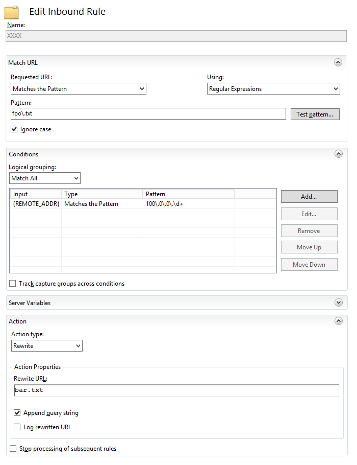

In this short post I will demonstrate how you can rewrite requests to resources hosted on an IIS web server.
Firstly, you need to download and install the IIS rewrite module from Microsoft. To install the x64 version of the module, run:
msiexec.exe /i rewrite_amd64.msi /qbThe next step is to create a rewrite rule. As an example, the following PowerShell script will create a rule named XXXX that will rewrite any request for "foo.txt", from any client with an IP address in the range 100.0.0.1 - 100.0.0.254, to "bar.txt":
$name = 'XXXX'
$inbound = 'foo\.txt'
$outbound = 'bar.txt'
$range = '100\.0\.0\.\d+'
$site = 'IIS:\Sites\Default Web Site'
$root = 'system.webServer/rewrite/rules'
$filter = "{0}/rule[@name='{1}']" -f $root, $name
Add-WebConfigurationProperty -PSPath $site -filter $root -name '.' -value @{name=$name; patterSyntax='Regular Expressions'; stopProcessing='False'}
Set-WebConfigurationProperty -PSPath $site -filter "$filter/match" -name 'url' -value $inbound
Set-WebConfigurationProperty -PSPath $site -filter "$filter/conditions" -name '.' -value @{input='{REMOTE_ADDR}'; matchType='0'; pattern=$range; ignoreCase='True'; negate='False'}
Set-WebConfigurationProperty -PSPath $site -filter "$filter/action" -name 'type' -value 'Rewrite'
Set-WebConfigurationProperty -PSPath $site -filter "$filter/action" -name 'url' -value $outboundThis is what the resultant rule should look like in IIS:
